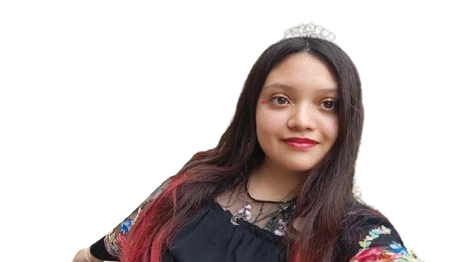

Mi nombre es Iky Haideé Contreras Leal, nací el 21 de Junio del 2004, tengo 22 años, mis padres son Efrén Contreras Romero y Ericka Haideé Leal Herrera, tengo una hermana llamada Ericka Nerea Contreras Leal. Estoy estudiando la carrera de diseño gráfico en la Facultad de Estudios Superiores Acatlán de la Universidad Nacional Autónoma de México, actualmente estoy en el noveno semestre de la carrera.
Desde pequeña era una niña a quien le gustaba mucho pintar y dibujar, así que elegí una carrera en donde pudiera seguir haciéndolo, aunque en la actualidad he tomado cierta preferencia por la técnica digital. Me considero una persona creativa y con habilidad en el uso de las herramientas digitales.

MISIÓN:
Crear soluciones de diseño gráfico que comuniquen ideas de manera creativa, estratégica y efectiva, buscando satisfacer las necesidades de cada cliente mediante propuestas que transmitan su esencia, fortalezcan su identidad y generen una conexión con su público.
VISIÓN:
Consolidarse como una diseñadora gráfica reconocida por su versatilidad y capacidad de creatividad, destacando por desarrollar proyectos visuales de calidad que respondan a las tendencias y necesidades del mercado. Aspirando a mantenerse en constante aprendizaje y crecimiento profesional, explorando nuevas áreas del diseño, especialmente la creación de contenido audiovisual e ilustración digital
VALORES:
✮ Responsabilidad: Cumplir con los compromisos, tiempos de entrega y objetivos establecidos en cada proyecto.
✮Compromiso: Involucrarse en cada trabajo, procurando ofrecer resultados que satisfagan las necesidades del cliente.
✮Innovación: Explorar nuevas herramientas, técnicas y tendencias para mantenerse actualizada dentro del ámbito del diseño.
✮Adaptabilidad: Tener la capacidad de aprender para trabajar en diferentes áreas y estilos de diseño.
✮Comunicación: Escuchar y transmitir ideas de manera clara para lograr resultados que representen correctamente las necesidades del cliente.
Permíteme compartir un poco de lo que hago, trabajos de la escuela, ilustraciones que realizo durante mi tiempo libre y lo que he elaborado para clientes reales.